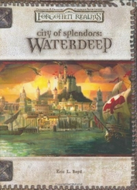

“City of Splendors” on the
Shelf of Many Books

City of Splendors: Waterdeep
D&D 3.5
(3e)
Year
: 2005 (June)
City of Splendors
on Amazon
City of Splendors
on TSR Info
Known monsters from the book:
Changesteed
Dweomervore
Guardgoyle
Leucrotta
Scaladar
Sea Wraith
Walking Statue of Waterdeep
Watchspider
Wilora